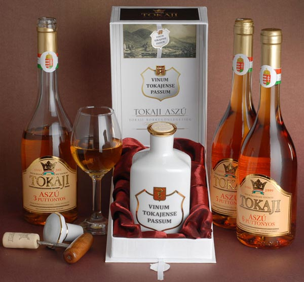
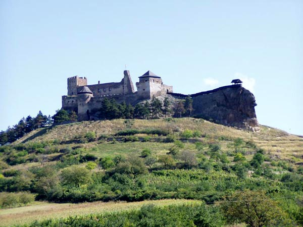

Milyen vidék ez? Nehéz lenne néhány szóval jellemezni a sokarcú, vibráló, mégis fenséges nyugalmat árasztó tájat, ahol az ember és a természet évszázadok óta él szelíd harmóniában. A Zempléni-hegység és a Bodrogköz találkozásánál formálódott területen ezernyi módját találja az ember – akár az utazó, akár az itt élő - , hogy megismerje a természetet, hogy közel kerüljön csodáihoz. Az ásványgyűjtő, a madarak életére kíváncsi ornitológus, a vadak csapásait járó erdőszerető ember, a vízparton csendesen üldögélő horgász éppúgy megtalálja az örömét, mint a tájat gyalogosan, kenuval vagy kerékpárral bebarangoló turista.
A Zempléni-hegység területén a miocén korú, 15-20 millió éve működött tűzhányók vulkanizmusának anyaga és a hajdani vulkánok lepusztított, a természet erői által alakított formakincse uralkodik. Itt található a mai Magyarország legmagasabb, legépebben megmaradt tűzhányó kúpja, a tokaji Nagy-Kopasz, mely büszke védőbástyaként őrzi a Zempléni hegyvidéket és a Tisza-Bodrog összefolyás történelmileg igen jelentős területét. A drámai hatású csoportba rendeződött Sátor-hegyek is egy hajdani tűzhányó kalderájának lepusztult maradványai, melynek méretei talán az Etna mai méreteivel vetekedtek.

A hegységet létrehozó vulkanizmus a térség mai képére is rányomja bélyegét. A kőzetek bányászható nyersanyagokban való gazdagsága és a vulkanikus talajokon termő kiváló minőségű szőlő mindmáig meghatározza a táj emberének életét. A hegység felszínét a szegély lejtőin és szoknyáján a szőlő uralja, míg a hegyvidék belső területein érintetlen erdők, középkori eredetű fás legelők és rétek váltakoznak.
Az ide látogató turista szinte napokig gyalogolhat anélkül, hogy a mai iparosodott társadalom bármi jelét is tapasztalnia kellene. Olyan vidék ez, ahol a déli melegkedvelő flóra és a Kárpátok magashegyi növényei randevúznak egymással, ahol még ma is viszonylagos zavartalanságban élhet az országosan is kiemelkedő vadállomány, ahol visszatelepültnek mondható a hiúz és a farkas és ahol világelső muflon- és gímtrófeák jellemzik az állomány minőségét. A terület természeti értékeinek, gazdag növény- és állatvilágának védelmében hozták létre a Zempléni Tájvédelmi Körzetet.
A Zempléni-hegység meredek csúcsaira várakat építettek, sok közülük romos:
Bakancsos turizmus
Borkóstolás, gasztronómia
Vár és kastélyturizmus
A Zempléni-hegység lábánál, Sárospatak - Sátoraljaújhely térségében található az ország egyik legnagyobb geotermikus energia vagyona. Sárospatak-Végardó fürdője a 300 méteres mélységből feltörő mélykarszt eredetű termálkincsre épült, 1975-ben ásványvízzé nyilvánították. A termálfürdő 47-48 0C-os kálcium-magnézium, nátrium-szulfát, hidrogén-karbonát tartalmú termálvize gyógyulást kínál az izületi és érrendszeri megbetegedésben szenvedőknek.
A kilencvenes évek közepétől szaporodtak meg a konferenciák, work-shop-ok, értekezletek és az ezekhez kapcsolódó incentive programok.
Zempléni Kalandpark